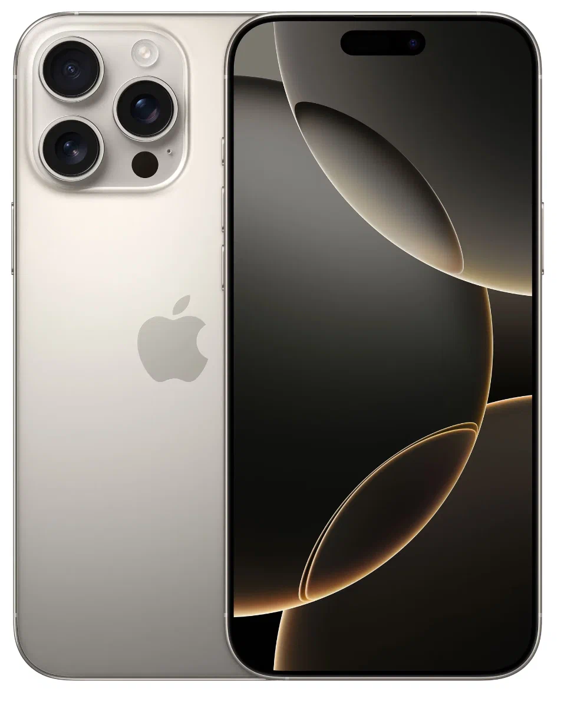
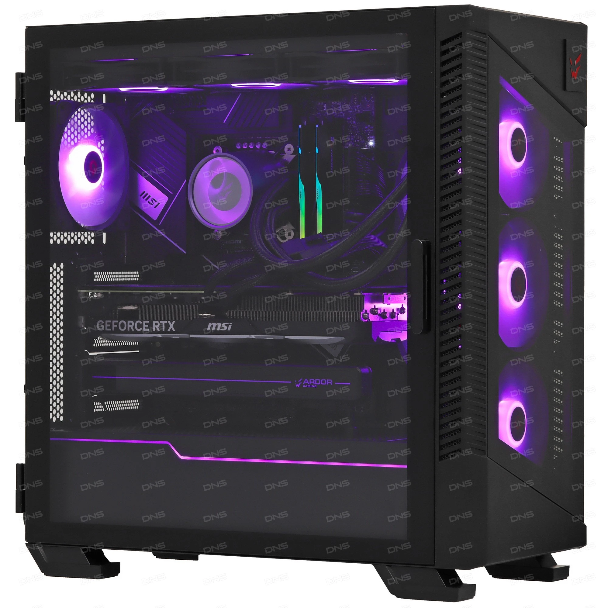

Iphone 16 pro max
Смартфон Apple iPhone 16 Pro Max 256 ГБ, Dual nano SIM + eSIM, натуральный титан.
Добро пожаловать в эпоху, где ваша продуктивность встречается с первоклассной технологией. iPhone 16 Pro Max — это вершина инженерной мысли и дизайна, объединяющая в себе мощь, инновации и неизменное качество, характерное для Apple.
Playstation 5

PlayStation Spectral Super Resolution (PSSR) использует AI - улучшенное разрешение для получения сверхчеткого разрешения изображения на 4K - телевизорах, воспроизведения в сверхвысокой четкости с удивительными деталями Оптимизированная производительность хоста для более высокой и последовательной частоты кадров, поддержка 60 Гц и 120 Гц дисплеев, для достижения шелкового игрового опыта Усовершенствованный опыт трассировки лучей для достижения более высокого уровня реальности при изучении потрясающего игрового мира с помощью трассировки лучей, тени и высококачественного глобального освещения
Computer
Intel Core i7-13700KF, 8 x 3.4 ГГц, 32 ГБ DDR5, GeForce RTX 4070 Ti, SSD 2000 ГБ, без ОС.
ПК ARDOR GAMING EVO X064 размещен в корпусе Mid-Tower с черным исполнением и оптимальным обзором на все установленные внутри компоненты благодаря прозрачным панелям. За счет возможностей процессора Intel Core i7-13700KF и наличия 32 ГБ оперативной памяти стандарта DDR5 готовая к использованию сборка позволит вам запускать ресурсоемкие видеоигры. Уверенная обработка графического контента в играх возможна благодаря дискретной видеокарте GeForce RTX 4070 Ti.
Системный блок для гейминга ARDOR GAMING EVO X064 не имеет предустановленной ОС и поддерживает установку любой рабочей платформы, выбранной вами. Для установки ОС и приложений, а также долговременного хранения данных сборка располагает SSD-накопителем емкостью 1000 ГБ. Задачу обеспечения всех компонентов ПК электроэнергией решает энергоэффективный блок питания с полной мощностью на выходе 850 Вт.